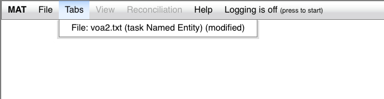
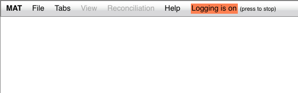

The MAT UI has a number of available settings which you can use.
The Tabs menu looks like this:

This menu is initially blank. It lists all tabs which have been
opened and not closed. If you select a tab in this menu, the UI
will display the tab (if it's hidden), and make it the active tab
(if it isn't). You can hide tabs by pressing the "-" button at the
right end of the tab, and make them visible again using this menu.
The View menu looks like this:
The View menu is active whenever there's an active tab. The
options in this menu are as follows:
If you enable this setting, you'll get the following behavior:
You can see that in the tagging info line, the start and end
offsets of the annotation are now displayed.
If you enable this setting, your UI will now look like this:
The lower pane gives you access to a table for each annotation
label. For more complex tasks, this table will be very useful. It
can be sorted by most of the columns. The menu immediately above
the table allows you to select which label you wish to display in
the table.
The Help menu looks like this:
The "Documentation" item will open a new tab or window containing
this documentation; the "About MAT" item will show a small popup
window which shows the MAT version number.
As you can see from the images above, the menubar contains an
item labeled "Logging is off (press to start)". If you press that
button, your UI will look like this:

At this point, the logger is enabled. This log captures a wide
range of timestamped UI gestures. If you press the button again,
the browser stops logging, and downloads a CSV log of your
interaction, whose format is described here.